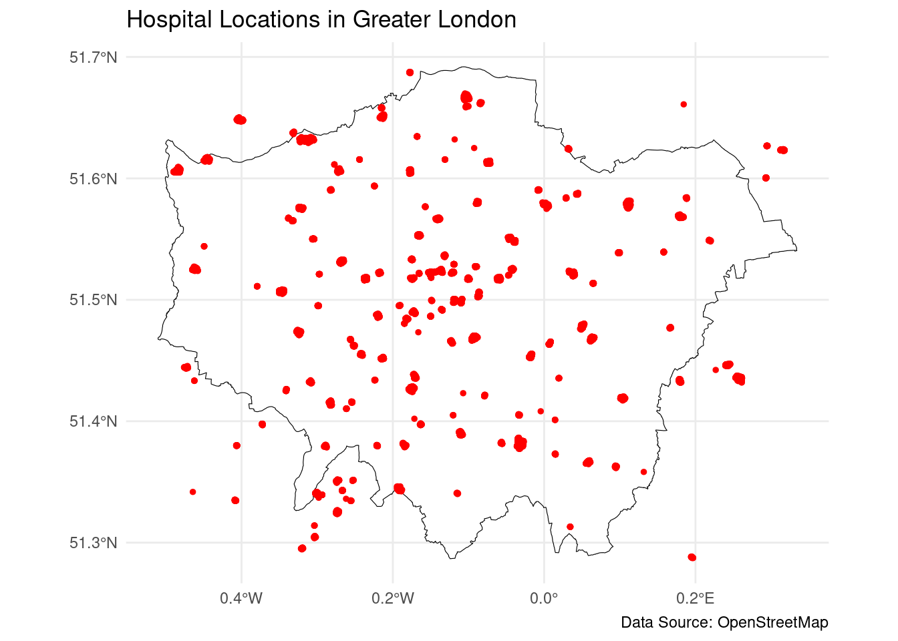
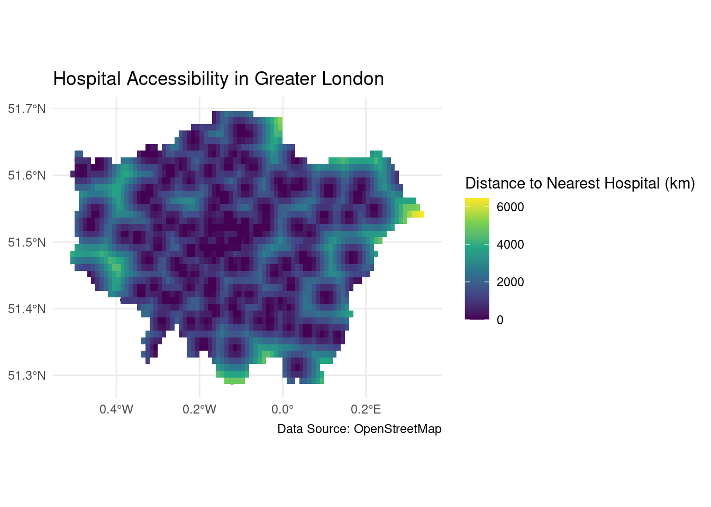
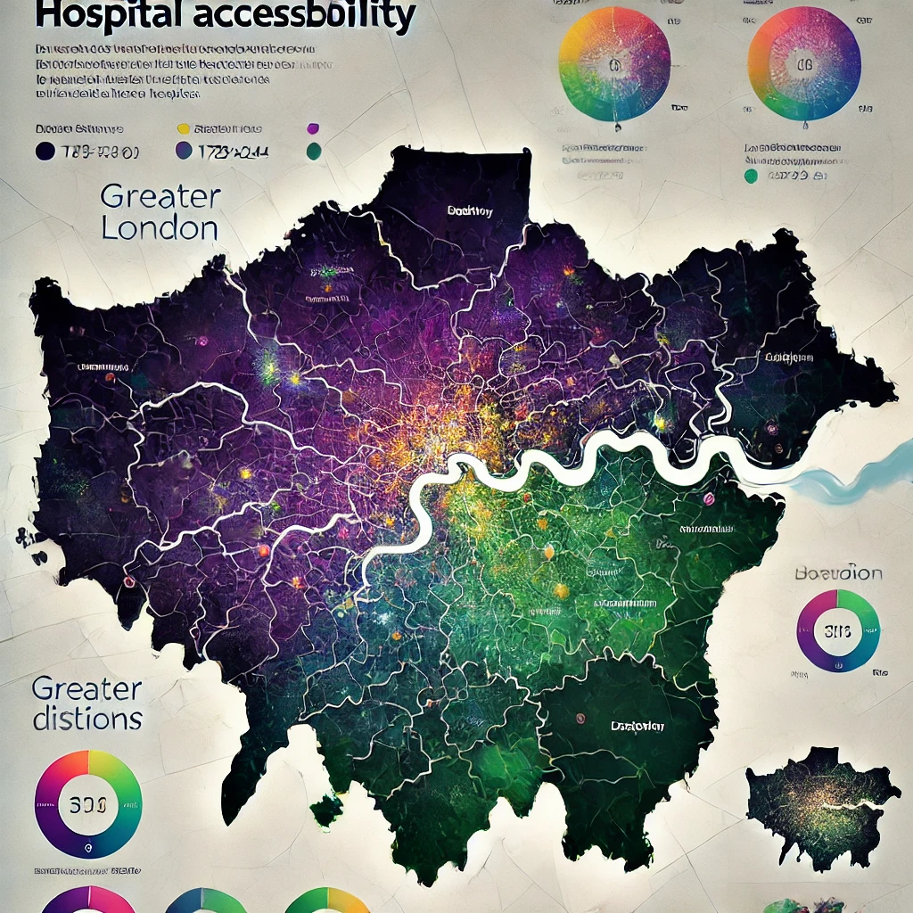

![]()
library(tidyverse) # for data manipulation and visualization
library(sf) # for handling spatial data
library(ggplot2) # for advanced plotting
library(osmdata) # for extracting data from OpenStreetMap
library(units) # for handling distance unitsDay 8: AI Only
This one is interesting for me. As I mentioned previously, I spent last year using AI to generate maps for the challenges. These are not particularly successful as maps, although are aesthetically pleasing!
When the more recent large language models have evolved substantially over the past year has been in their ability to generate code. In this post, I have created the outputs entirely from a single prompt, and present this as it was produced by OpenAI ChatGPT 4o.
The prompt:
I want you to generate an entire blog post that provides step by step instructions to create a map of hospital locations in Liverpool City Region using R with code using both the tidyverse and SF.
I then want you to map hospital accessibility.
I want the blog post to reference some interesting patterns within the map. The code blocks should be presented as they would in a Quarto document and be executable in R. The code that is created should be entirely self contained, so have no manual files provided by the user.
This generated the following: (jump to the end for the Section 2)
Mapping Hospital Locations and Accessibility in Greater London Using R
In this tutorial, we’ll create a map of hospital locations across Greater London and explore hospital accessibility using R. We’ll utilize the tidyverse and sf packages to handle data manipulation and spatial processing. This will be a self-contained project using open data sources, and we’ll generate code blocks in Quarto format for easy replication.
Required Packages
We’ll start by loading the necessary packages:
Step 1: Getting Hospital Data
We’ll source our hospital data from OpenStreetMap (OSM) using the osmdata package, which provides access to a vast array of location-based data.
# Define the bounding box for Greater London
london_bbox <- getbb("Greater London, UK")
# Fetch hospital locations within Greater London from OSM
hospitals <- opq(bbox = london_bbox) %>%
add_osm_feature(key = "amenity", value = "hospital") %>%
osmdata_sf() %>%
.$osm_points %>%
st_as_sf()
# View hospital data
head(hospitals)Simple feature collection with 6 features and 71 fields
Geometry type: POINT
Dimension: XY
Bounding box: xmin: -0.4618081 ymin: 51.5251 xmax: -0.4585093 ymax: 51.52699
Geodetic CRS: WGS 84
osm_id name access addr:city addr:country addr:county addr:housename
1523171 1523171 <NA> <NA> <NA> <NA> <NA> <NA>
1523180 1523180 <NA> <NA> <NA> <NA> <NA> <NA>
1523182 1523182 <NA> <NA> <NA> <NA> <NA> <NA>
1523183 1523183 <NA> <NA> <NA> <NA> <NA> <NA>
1523185 1523185 <NA> <NA> <NA> <NA> <NA> <NA>
1523208 1523208 <NA> <NA> <NA> <NA> <NA> <NA>
addr:housenumber addr:place addr:postcode addr:street amenity barrier
1523171 <NA> <NA> <NA> <NA> <NA> <NA>
1523180 <NA> <NA> <NA> <NA> <NA> <NA>
1523182 <NA> <NA> <NA> <NA> <NA> <NA>
1523183 <NA> <NA> <NA> <NA> <NA> <NA>
1523185 <NA> <NA> <NA> <NA> <NA> <NA>
1523208 <NA> <NA> <NA> <NA> <NA> <NA>
camera:mount camera:type capacity check_date check_date:opening_hours
1523171 <NA> <NA> <NA> <NA> <NA>
1523180 <NA> <NA> <NA> <NA> <NA>
1523182 <NA> <NA> <NA> <NA> <NA>
1523183 <NA> <NA> <NA> <NA> <NA>
1523185 <NA> <NA> <NA> <NA> <NA>
1523208 <NA> <NA> <NA> <NA> <NA>
colour contact:phone contact:website covered created_by crossing
1523171 <NA> <NA> <NA> <NA> <NA> <NA>
1523180 <NA> <NA> <NA> <NA> <NA> <NA>
1523182 <NA> <NA> <NA> <NA> <NA> <NA>
1523183 <NA> <NA> <NA> <NA> <NA> <NA>
1523185 <NA> <NA> <NA> <NA> <NA> <NA>
1523208 <NA> <NA> <NA> <NA> <NA> <NA>
crossing:island crossing:markings description direction door email
1523171 <NA> <NA> <NA> <NA> <NA> <NA>
1523180 <NA> <NA> <NA> <NA> <NA> <NA>
1523182 <NA> <NA> <NA> clockwise <NA> <NA>
1523183 <NA> <NA> <NA> <NA> <NA> <NA>
1523185 <NA> <NA> <NA> <NA> <NA> <NA>
1523208 <NA> <NA> <NA> <NA> <NA> <NA>
emergency entrance fax fee fhrs:id foot healthcare
1523171 <NA> <NA> <NA> <NA> <NA> <NA> <NA>
1523180 <NA> <NA> <NA> <NA> <NA> <NA> <NA>
1523182 <NA> <NA> <NA> <NA> <NA> <NA> <NA>
1523183 <NA> <NA> <NA> <NA> <NA> <NA> <NA>
1523185 <NA> <NA> <NA> <NA> <NA> <NA> <NA>
1523208 <NA> <NA> <NA> <NA> <NA> <NA> <NA>
healthcare:speciality height highway historic horse inscription
1523171 <NA> <NA> <NA> <NA> <NA> <NA>
1523180 <NA> <NA> <NA> <NA> <NA> <NA>
1523182 <NA> <NA> mini_roundabout <NA> <NA> <NA>
1523183 <NA> <NA> <NA> <NA> <NA> <NA>
1523185 <NA> <NA> <NA> <NA> <NA> <NA>
1523208 <NA> <NA> <NA> <NA> <NA> <NA>
internet_access locked man_made material memorial motor_vehicle
1523171 <NA> <NA> <NA> <NA> <NA> <NA>
1523180 <NA> <NA> <NA> <NA> <NA> <NA>
1523182 <NA> <NA> <NA> <NA> <NA> <NA>
1523183 <NA> <NA> <NA> <NA> <NA> <NA>
1523185 <NA> <NA> <NA> <NA> <NA> <NA>
1523208 <NA> <NA> <NA> <NA> <NA> <NA>
opening_hours openplaques:id operator operator:type operator:wikidata
1523171 <NA> <NA> <NA> <NA> <NA>
1523180 <NA> <NA> <NA> <NA> <NA>
1523182 <NA> <NA> <NA> <NA> <NA>
1523183 <NA> <NA> <NA> <NA> <NA>
1523185 <NA> <NA> <NA> <NA> <NA>
1523208 <NA> <NA> <NA> <NA> <NA>
parking phone public ref:GB:nhs_ods ref:GB:tflcid source surveillance
1523171 <NA> <NA> <NA> <NA> <NA> <NA> <NA>
1523180 <NA> <NA> <NA> <NA> <NA> <NA> <NA>
1523182 <NA> <NA> <NA> <NA> <NA> <NA> <NA>
1523183 <NA> <NA> <NA> <NA> <NA> <NA> <NA>
1523185 <NA> <NA> <NA> <NA> <NA> <NA> <NA>
1523208 <NA> <NA> <NA> <NA> <NA> <NA> <NA>
surveillance:type surveillance:zone tactile_paving toilets:wheelchair
1523171 <NA> <NA> <NA> <NA>
1523180 <NA> <NA> <NA> <NA>
1523182 <NA> <NA> <NA> <NA>
1523183 <NA> <NA> <NA> <NA>
1523185 <NA> <NA> <NA> <NA>
1523208 <NA> <NA> <NA> <NA>
traffic_calming website wheelchair wheelchair:description width
1523171 <NA> <NA> <NA> <NA> <NA>
1523180 <NA> <NA> <NA> <NA> <NA>
1523182 <NA> <NA> <NA> <NA> <NA>
1523183 <NA> <NA> <NA> <NA> <NA>
1523185 <NA> <NA> <NA> <NA> <NA>
1523208 <NA> <NA> <NA> <NA> <NA>
wikidata geometry
1523171 <NA> POINT (-0.4585093 51.5251)
1523180 <NA> POINT (-0.4587971 51.52566)
1523182 <NA> POINT (-0.4588551 51.52587)
1523183 <NA> POINT (-0.4591827 51.52598)
1523185 <NA> POINT (-0.4594043 51.52606)
1523208 <NA> POINT (-0.4618081 51.52699)This code fetches hospital locations, extracting only the point geometries. Each hospital location will have spatial coordinates, allowing us to visualize them on a map.
Step 2: Plotting Hospitals on a Map of Greater London
Now we’ll retrieve boundary data for Greater London, allowing us to create a contextual map to visualize hospital locations within the city.
# Retrieve boundary of Greater London
london_boundary <- opq(bbox = london_bbox) %>%
add_osm_feature(key = "boundary", value = "administrative") %>%
osmdata_sf() %>%
.$osm_multipolygons %>%
filter(name == "Greater London")
# Plot the map
ggplot() +
geom_sf(data = london_boundary, fill = NA, color = "black") +
geom_sf(data = hospitals, color = "red", size = 1) +
labs(title = "Hospital Locations in Greater London",
caption = "Data Source: OpenStreetMap") +
theme_minimal()
This map gives an initial visual distribution of hospitals across Greater London, highlighting the urban core with clusters of healthcare facilities.
Step 3: Calculating Accessibility to Hospitals
To measure accessibility, we’ll calculate the Euclidean distance between any given point within Greater London and the nearest hospital. Let’s generate a grid over Greater London to act as hypothetical locations where people might live or work, and calculate the distances to the closest hospital.
# Define a grid over Greater London
grid <- st_make_grid(london_boundary, cellsize = 0.01, square = TRUE) %>%
st_as_sf() %>%
filter(st_intersects(., london_boundary, sparse = FALSE))
# Calculate distance from each grid cell to the nearest hospital
grid$nearest_hospital_dist <- st_distance(grid, hospitals) %>%
apply(1, min) #%>% units::set_units("km")
# Plot distance to nearest hospital
ggplot() +
geom_sf(data = london_boundary, fill = NA, color = "black") +
geom_sf(data = grid, aes(fill = nearest_hospital_dist), color = NA) +
scale_fill_viridis_c(name = "Distance to Nearest Hospital (km)") +
labs(title = "Hospital Accessibility in Greater London",
caption = "Data Source: OpenStreetMap") +
theme_minimal()
This accessibility map reveals which areas are more isolated in terms of hospital access. Outer London areas, particularly in the southern and eastern boroughs, may show larger distances to the nearest hospital, highlighting areas where healthcare access might be more limited.
Step 4: Observing Patterns and Conclusions
From the generated maps, some patterns emerge:
Hospital Clustering: Hospitals tend to cluster around central London, particularly near well-developed areas like Westminster, Southwark, and Camden. This reflects the concentration of population and infrastructure.
Accessibility Gaps: Certain boroughs in the outer edges of Greater London, such as Bromley and Havering, display limited hospital accessibility. This suggests potential areas for future healthcare infrastructure improvements, especially in regions with lower density but substantial residential areas.
Urban Core Accessibility: The central parts of London generally have excellent access, with distances to the nearest hospital typically falling below 2 km. This is ideal for urgent care accessibility and reflects the historic distribution of healthcare facilities
Conclusion
By using R, tidyverse, and sf, we’ve created an insightful geographic analysis of hospital locations and accessibility within Greater London. Mapping accessibility gaps provides valuable insights for urban planners and policymakers to target underserved areas and improve healthcare distribution.
This workflow is entirely reproducible using the osmdata package for real-time data extraction from OpenStreetMap, making it adaptable for analyses in other cities or regions.
Critique
Overall the results are quite impressive and the single shot prompt made a number of reasonable maps, and conducted some fairly “creative” spatial analysis. In general, the ability to generate code is pretty sophisticated in the current generation of large language models as a result of the large corpus of code training data.
A few critical thoughts:
Ontology matters - in this instance “London” is interpreted as Greater London. To generate any results, this also relied on this definition being understood by the
getbbfunction.There is a reliance on OSM data being queried by bounding box. As such, some hospitals falling outside of “London” are also found, and no attempt is made to subset the found locations geographically.
I had to make one tiny change to the code to correct an issue with units. It is also worth noting that the map has a legend key in KM not M.
It is difficult to say whether the observations that are made are related to the map or what might generally be logical in the context of the question asked. The statements about specific areas in London are interesting - as it is unclear based on the representation that these locations would be observable in any way.
The extent to which large language models posses or mimic (I will leave that one for now!) spatial literacy is an active research topic. There is significant complexity to spatial cognition, and it is clear our current generation of models have room for improvement in this area. As a not particularly sophisticated or scientific test, I fed the final map image presented back into GPT 4o and asked:
In a paragraph interpret the spatial / geographical patterns that are shown in this map for a blog post
This map of hospital accessibility in Greater London reveals a distinctive spatial pattern, where central areas exhibit higher accessibility to healthcare facilities compared to the outer regions. The darker, purple-shaded zones, concentrated around the city’s core, indicate shorter distances to the nearest hospital, highlighting Greater London’s centrality in healthcare infrastructure. In contrast, as we move outward toward suburban and peripheral areas, the colors shift to green and yellow, signifying longer distances and thus reduced accessibility. This pattern underscores a familiar urban-rural divide in healthcare availability, where city centers often benefit from a higher density of services, while outer regions experience fewer options and increased travel times for urgent care. This spatial disparity poses challenges, particularly for residents in more remote zones, emphasizing the need for targeted health infrastructure improvements to bridge the accessibility gap across Greater London.
Think we will leave this one here…! My general takeaway is AI is excellent help for coding; but better check those interpretations! Human spatial literacy still has some salience yet!
Final final…. I fed the generated interpretation back into GPT 4o and asked for an image…. well it looks pretty at least!
